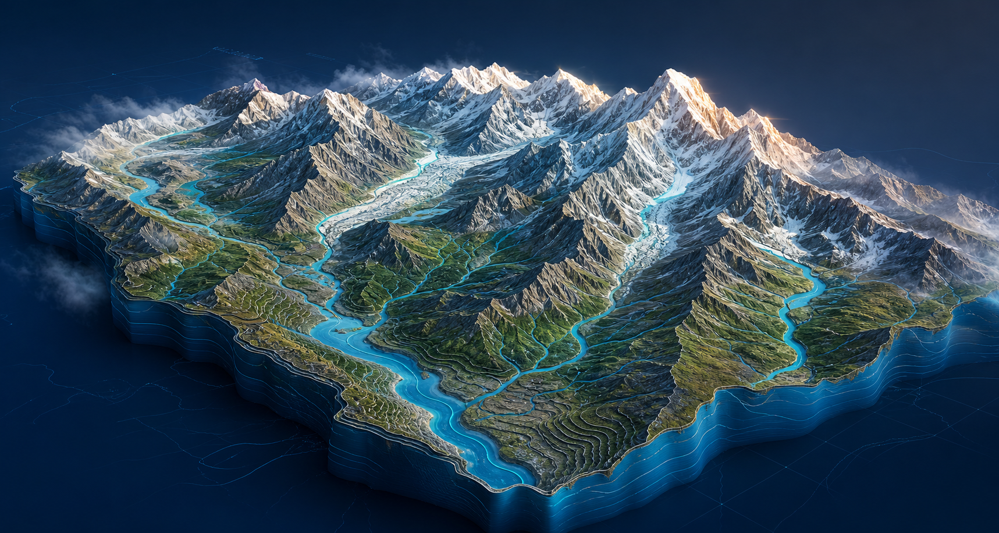

journal publications
Hydrology Geospatial Science Himalayas
Reading water.
Mapping change.
Building resilience.
I’m Dr. Sachchidanand Singh, a scientist using remote sensing, GIS, hydrological modelling, and field evidence to understand water systems and natural hazards.
Current position
Scientist-B
NIH-WHRC · Jammu
Impact at a glance
Turning complex earth observations into practical intelligence for water security.
listed research projects
academic awards
industry experience
About the scientist
Science grounded in mountains, water, and people.
Dr. Sachchidanand Singh is a Scientist-B at the National Institute of Hydrology, Western Himalayan Regional Centre, Jammu.
His work brings hydrology, remote sensing, GIS, field investigation, and geospatial analytics together to strengthen water-resource management and disaster resilience across the Himalayan region.
PhDIIT Roorkee
M.Tech.IIRS–ISRO
B.Tech.NIT Durgapur

Research focus
Where water science meets real-world decisions.
The work connects satellite observations, spatial analysis, physical models, and field evidence to map water resources and natural hazards.
01
Himalayan hazards
Mapping flash floods, landslides, snow, glaciers, and erosion processes across complex mountain terrain.
FloodsLandslidesCryosphere
02
Water resources
Assessing surface water, water quality, catchment response, recharge, and watershed priorities.
HydrologyWater quality
03
Geospatial platforms
Building Web GIS and Google Earth Engine tools that make environmental data easier to explore and apply.
Web GISEarth Engine
Earth observation
From orbit to watershed.
Satellite imagery becomes actionable water intelligence through spectral analysis, terrain models, field validation, and Web GIS.
Surface water
Snow & glaciers
Hazard mapping
01 · Acquire
Multispectral data
02 · Translate
Hydrological insight
Featured platform
WASAP — Water Surface Mapper
An interactive research application for exploring surface-water patterns through an accessible map interface powered by geospatial analysis.
Launch platform
Water body
Seasonal change
Current layer
NDWI
Surface water
Selected publications
View complete CV ↗
Evidence, documented.
Journal article
Analyzing Land Use Change and Surface Water Dynamics (1990–2020) in the Upper Bhima River Basin Using Google Earth Engine
Discover Water
Journal article
Pre- and Post-Landslide Phenomena in Pernote Area, Ramban District, Jammu and Kashmir, India
Landslides
Journal article
Geospatial Assessment of Soil Erosion in the Basantar and Devak Watersheds of the NW Himalaya
Geosystems and Geoenvironment
Journal article
Integrating Community Perceptions, Scientific Data and Geospatial Tools for Sustainable Water Quality Management
Results in Engineering
Academic journey
Built through curiosity and fieldwork.
From civil engineering and industry practice to advanced geospatial water research and public science.
Present
Scientist-B
National Institute of Hydrology
Western Himalayan Regional Centre · JammuDoctoral Research
PhD, WRD&M
Indian Institute of Technology Roorkee
Water Resources Development and Management2017 — 2019
Master of Technology
Indian Institute of Remote Sensing, ISRO
Remote Sensing and GIS (Water Resources) · Andhra University2010 — 2014
Bachelor of Technology
National Institute of Technology Durgapur
Civil Engineering
Open research tools
Data made explorable.
Interactive applications developed to make hydrological information easier to access, inspect, and use.
Collaborate
Let’s turn water data into meaningful action.
Open to research collaboration, geospatial modelling projects, and conversations about Himalayan water security and natural hazards.